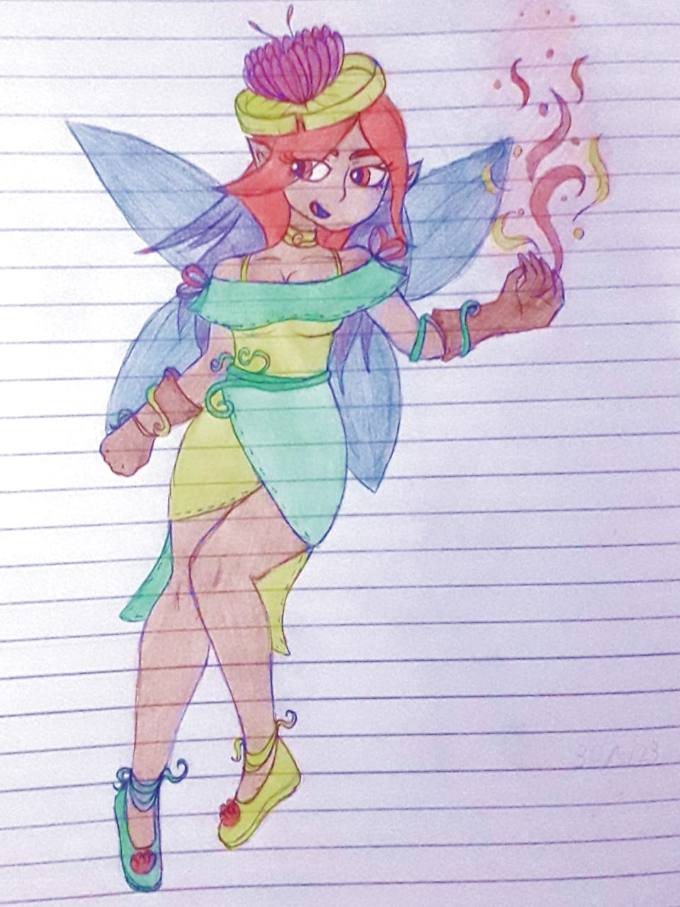
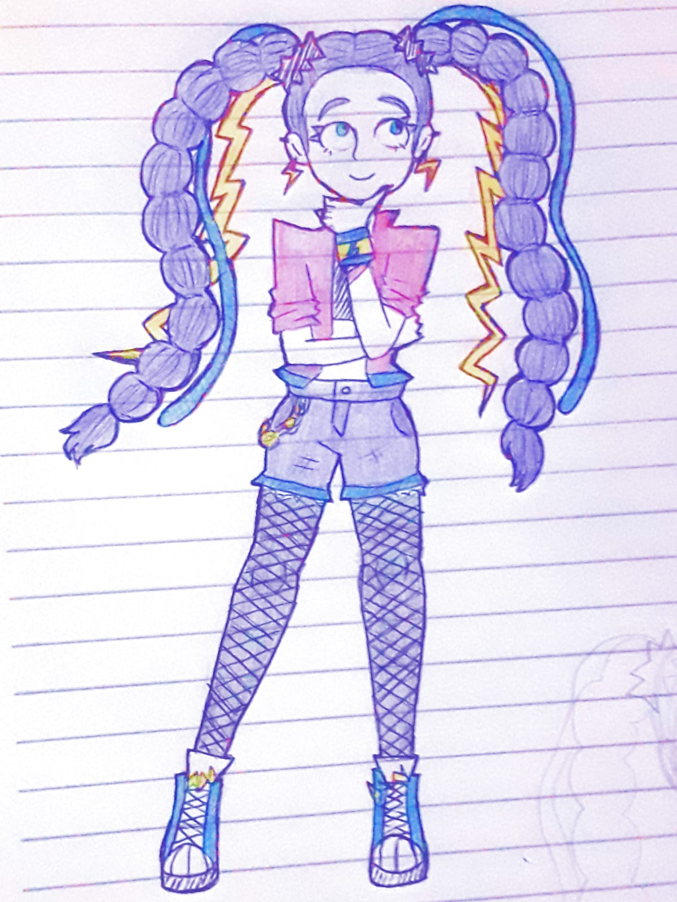

Desenhos de personagens que eu criei.
Curiosidade!

Fiz esse desenho para a aula de artes.
Gostei muito do resultado,
e também de como o cenário ficou
(eu raramente faço eles kkkk).
Gostei muito do resultado,
e também de como o cenário ficou
(eu raramente faço eles kkkk).

Também fiz esse desenho para artes.
O desenho era para ter cores frias,
e acho que alcancei esse resultado.

O desenho era para ter cores frias,
e acho que alcancei esse resultado.
Uma fada que eu desenhei.
As roupas feitas de planta são meio clichê,
mas acho que elas funcionam no design.

As roupas feitas de planta são meio clichê,
mas acho que elas funcionam no design.
Essa personagem foi um pouco inspirada
em certos estilos de fashion, por isso
suas roupas e cabelos são tão estilizados.
em certos estilos de fashion, por isso
suas roupas e cabelos são tão estilizados.